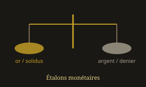

Système pondéral carolingien
Livre, sou et denier — l'argent comme étalon de l'Occident médiéval

Une rupture pondérale majeure
Le système pondéral carolingien marque le passage de l'Occident de l'étalon d'or byzantin (solidus, tremissis) à un étalon d'argent fondé sur le denier. Les noms restent romains — livre, sou (solidus), denier (denarius) — mais leur sens change : la livre et le sou deviennent surtout des unités de compte, tandis que seule la pièce d'argent circule réellement.
Contexte : monnaies mérovingiennes (or dévalué) → réforme de Pépin et Charlemagne → denier carolingien. Vue d'ensemble : Systèmes de poids monétaires.
La réforme de 793/794
Vers 793/794, Charlemagne fixe un denier d'argent d'environ 1,7 g (valeurs moyennes souvent entre 1,6 et 1,8 g). Ce « denier nouveau » s'impose comme base du système.
Échelle de compte carolingienne
1 denier ≈ 1,7 g d'argent (pièce réelle)
12 deniers = 1 sou (solidus de compte)
20 sous = 1 livre (livre de compte)
donc 1 livre = 240 deniers
Une « livre » de compte correspond théoriquement à 240 × 1,7 g ≈ 408 g d'argent — ordre de grandeur distinct de la livre romaine de poids (~327 g).
Livre de poids et livre de compte
Il faut distinguer :
- Livre de poids : unité métrologique pour peser métaux et marchandises (variations régionales).
- Livre de compte : 240 deniers ; sert dans les actes et les loyers, sans pièce d'une livre.
Le sou de compte (12 deniers) hérite du nom du solidus mais n'est plus une pièce d'or : c'est un multiple de deniers d'argent.
Héritage romain et byzantin
Continuités nominales
Denier ← denarius (Rome)
Sou ← solidus (Rome / Byzance) — nom conservé, métal changé
Livre ← libra — idée d'unité-mère, sens transformé
Le solidus constantinien (~4,55 g d'or) reste l'étalon oriental ; l'Occident choisit l'argent (voir réformes monétaires).
Poids du denier et contrôle royal
La réforme suppose un poids stable et un monopole de frappe. Un denier trop léger trahit usure, fraude ou affaiblissement du pouvoir central (vers le monnayage féodal après Verdun).
Ordres de grandeur
Denier carolingien ≈ 1,7 g d'argent
Denier romain augustéen ≈ 3,9 g d'argent
Tremissis mérovingien ≈ 1,2–1,5 g d'or
Solidus byzantin ≈ 4,55 g d'or
Après Charlemagne
Le cadre 12 / 20 / 240 demeure la langue comptable de l'Occident. Les poids effectifs des deniers varient ensuite selon les royaumes. Au Xe–XIIe s., les deniers féodaux s'allègent souvent : le compte survit plus longtemps que le poids d'origine de 793/794.
→ Monnaies carolingiennes · Monnaies féodales
Fil conducteur
Étudier le système pondéral carolingien, c'est voir comment l'Occident a traduit l'héritage de la libra et du solidus dans un monde où l'argent porte la valeur quotidienne — réforme à la fois politique et métrologique.
Sources : métrologie carolingienne ; réforme de 793/794 ; livre de poids et livre de compte.